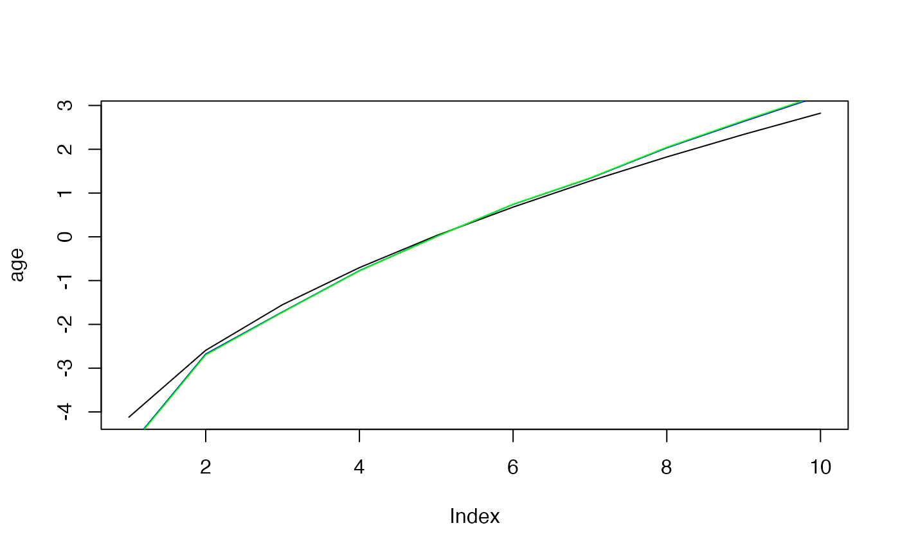
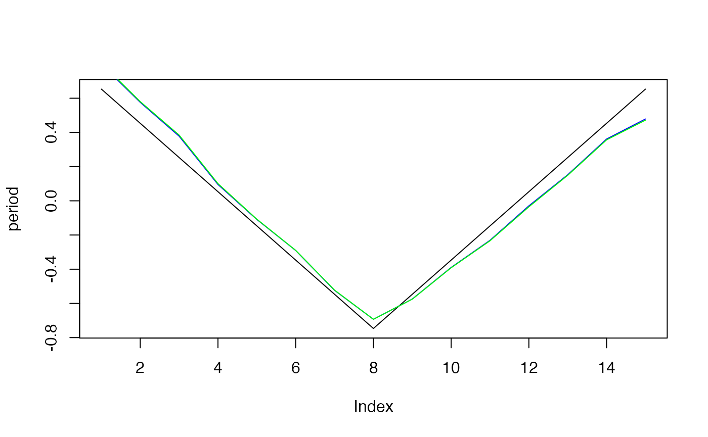
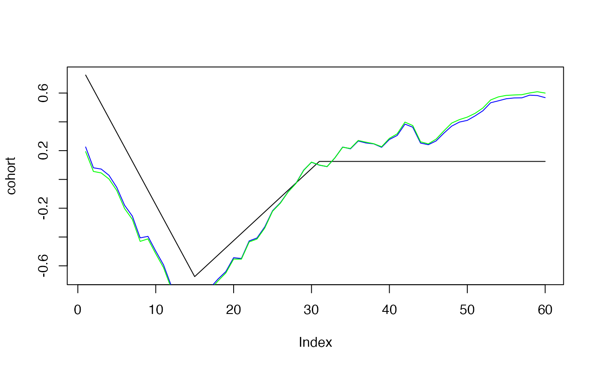

Simulating Age-Period-Cohort Data
Volker Schmid
2022-10-17
Source:vignettes/largevignettes/simulation.Rmd
simulation.Rmd
periods_per_agegroup=5
number_of_cohorts <- periods_per_agegroup*(10-1)+15
cohort<-rep(0,60)
cohort[1:15]<-(14:0)
cohort[16:30]<- (1:15)/2
cohort[31:60]<- 8
cohort<-cohort/10
cohort<-cohort-mean(cohort)
plot(cohort, type="l")
simdata<-apcSimulate(-10, age, period, cohort, periods_per_agegroup, 1e6)
print(simdata$cases)## [,1] [,2] [,3] [,4] [,5] [,6] [,7] [,8] [,9] [,10]
## [1,] 0 3 23 48 98 117 171 395 1152 3069
## [2,] 0 11 23 30 72 112 136 284 865 2113
## [3,] 1 6 15 31 58 105 121 220 592 1734
## [4,] 0 3 9 30 57 72 99 153 449 1253
## [5,] 0 3 8 21 39 64 94 137 322 942
## [6,] 0 3 8 21 36 55 75 135 249 677
## [7,] 0 3 10 18 30 45 68 85 185 499
## [8,] 1 2 8 12 29 51 57 72 139 356
## [9,] 0 7 0 18 26 46 61 94 143 443
## [10,] 1 2 6 21 40 67 72 143 165 469
## [11,] 0 3 7 23 52 83 101 143 211 514
## [12,] 0 3 11 34 48 98 157 216 292 495
## [13,] 1 9 17 41 68 124 187 240 375 566
## [14,] 3 9 14 35 69 177 265 352 468 643
## [15,] 0 9 20 37 96 176 323 467 571 698
simmod <- bamp(cases = simdata$cases, population = simdata$population, age = "rw1",
period = "rw1", cohort = "rw1", periods_per_agegroup =periods_per_agegroup)##
## Automatic check procedure removed 1 Markov chain. Please check for convergence using checkConvergence() and maybe change your model settings (maybe add overdispersion).
## Warning: MCMC chains did not converge!
print(simmod)##
## WARNING! Markov Chains have apparently not converged! DO NOT TRUST THIS MODEL!
##
## Model:
## age (rw1) - period (rw1) - cohort (rw1) model
## Deviance: 157.69
## pD: 50.28
## DIC: 207.97
##
##
## Hyper parameters: 5% 50% 95%
## age 0.431 1.021 2.061
## period 14.023 26.713 46.898
## cohort 64.287 106.691 169.076
checkConvergence(simmod)## Warning: MCMC chains did not converge!## [1] FALSE
plot(simmod)

effects<-effects(simmod)
effects2<-effects(simmod, mean=TRUE)
#par(mfrow=c(3,1))
plot(age, type="l")
lines(effects$age, col="blue")
lines(effects2$age, col="green")


prediction<-predict_apc(simmod, periods=5, population=array(1e6,c(20,10)))
plot(prediction$cases_period[2,], ylim=range(prediction$cases_period),ylab="",pch=19)
points(prediction$cases_period[1,],pch="–",cex=2)
points(prediction$cases_period[3,],pch="–",cex=2)
for (i in 1:20)lines(rep(i,3),prediction$cases_period[,i])
plot(prediction$period[2,])
cov_p<-rnorm(15,period,.1)
simmod2 <- bamp(cases = simdata$cases, population = simdata$population, age = "rw1",
period = "rw1", cohort = "rw1", periods_per_agegroup =periods_per_agegroup,
period_covariate = cov_p)
print(simmod2)##
## Model:
## age (rw1) - period (rw1) - cohort (rw1) model
## Deviance: 157.83
## pD: 50.26
## DIC: 208.09
##
##
## Hyper parameters: 5% 50% 95%
## age 0.433 1.013 2.064
## period 13.893 27.162 46.683
## cohort 63.533 106.503 165.888
##
##
## Markov Chains convergence checked succesfully using Gelman's R (potential scale reduction factor).
checkConvergence(simmod2)## [1] TRUE
plot(simmod2)